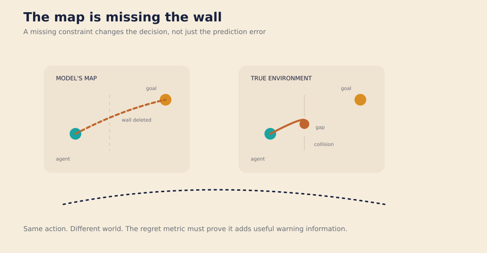
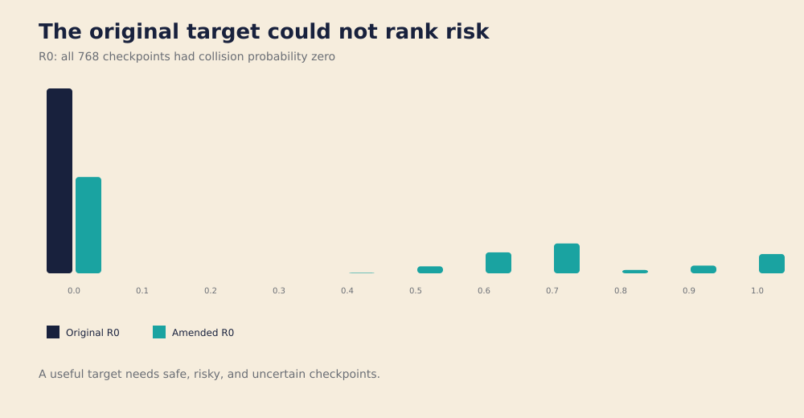
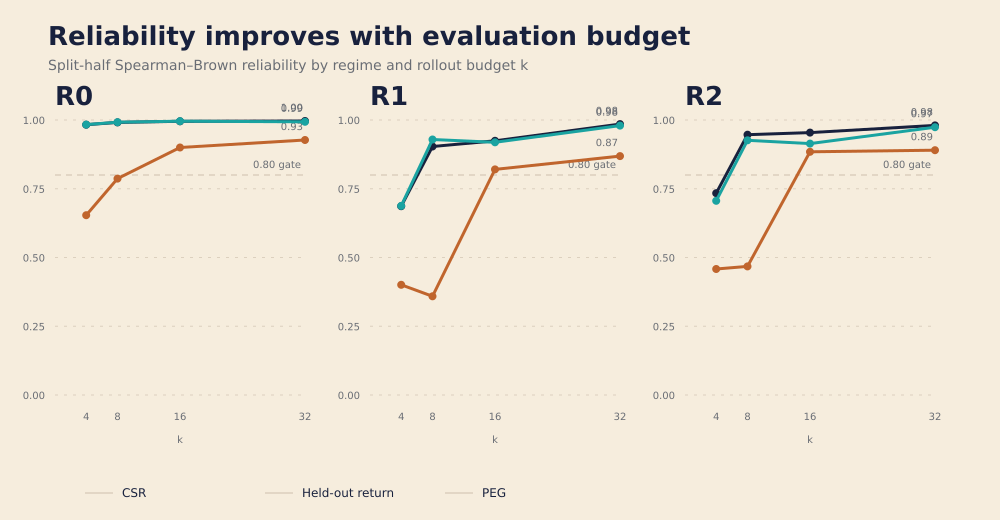
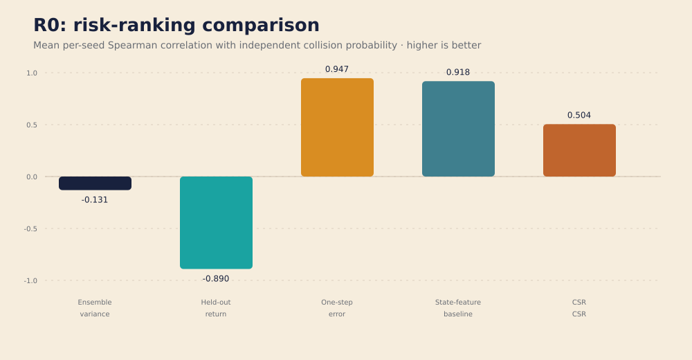
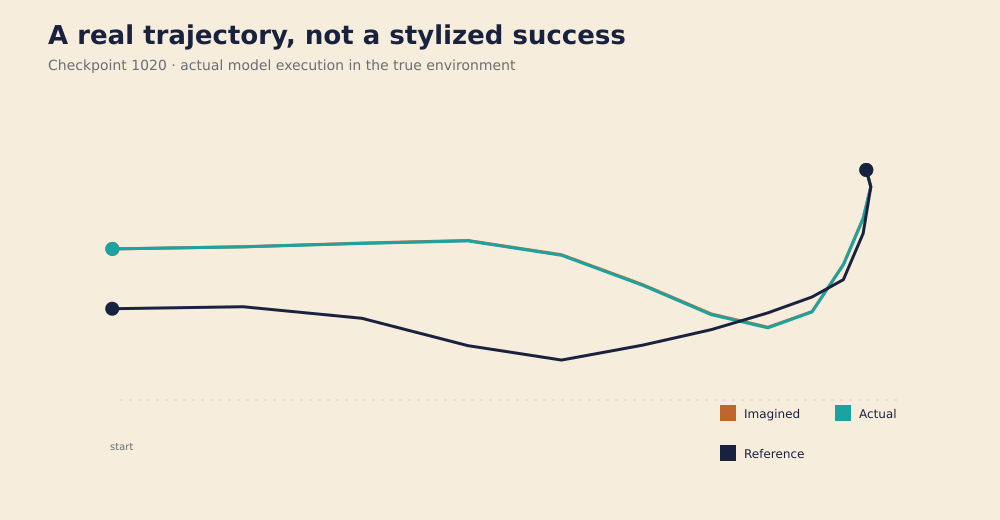
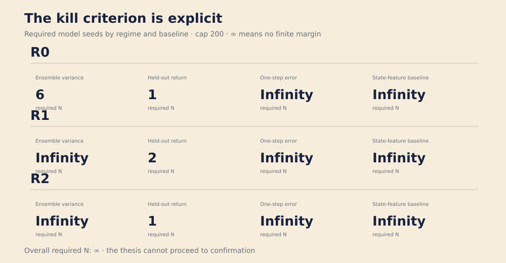

Negative is informative
A pre-registered rejection is evidence, not a failed project.
A BEAUTIFUL NEGATIVE RESULT
A story about a robot, a missing wall, and a metric that looked smarter than the evidence allowed.
THE SETUP
Imagine a robot trying to reach a goal. Its mental map is missing a wall that exists in the real world.
We are not trying to prove that a missing wall is dangerous. We already know the model is wrong. The real question is subtler: can regret tell us where the danger is, better than simpler measurements?
It is the return lost by following the model’s controller instead of a true-environment reference controller using the same candidate action sequences. It is not a global optimality guarantee.

THE TARGET
If every checkpoint is safe, there is no risk to rank. The original R0 design produced exactly that: 768 checkpoints, zero collisions, zero variance.

Randomized goals and broader speeds produced safe, risky, and uncertain checkpoints. R1 and R2 also passed with reliability above 0.95.
RELIABILITY
More episodes usually mean more stable estimates, but compute is not free. We swept \(k=\{4,8,16,32\}\) and chose the smallest budget that cleared the reliability gate in every regime.

THE TOURNAMENT
Each score ranks checkpoints by predicted collision risk. We compare its Spearman correlation with independently estimated collision probability. Higher is better.

| Score | Spearman ρ | Required N | Within cap? |
|---|
The state-feature baseline is fitted on development seeds only. It uses geometry, gap, velocity, and noise—not model predictions.
THE TRAJECTORY

THE VERDICT
CSR did not beat every required baseline in even one regime. The required sample size for the key comparisons was unbounded, so the pre-registered kill rule was triggered.
No confirmatory experiment will run. This does not prove CSR is useless everywhere. It shows that in this deleted-wall testbed, geometry and one-step error provide much better collision-risk predictions.

A pre-registered rejection is evidence, not a failed project.
Increasing seeds or redesigning until CSR looks better would undermine the protocol.
Raw JSONL, manifests, hashes, trajectory records, and analysis remain available for review.
PROVENANCE & REPRODUCIBILITY
PYTHONPATH=src python -m counterworld.pilot --stage power --output artifacts/development-power-r0-broadened-k16 --primary-k 16 --workers 8 --random-goals --r0-speed-range 0.75 1.5Run from the research/ directory with Python 3.11+ and NumPy 2.x. Artifacts remain development-only.